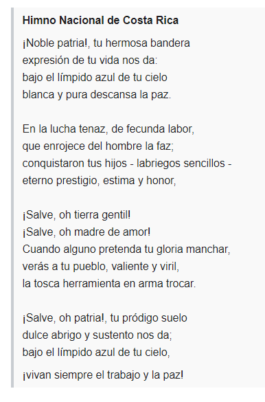

Simbolos Patrios
Los símbolos patrios de Costa Rica son los emblemas que representan a Costa Rica y a su pueblo. Actualmente, Costa Rica cuenta con 15 de ellos. Los símbolos nacionales más antiguos de Costa Rica son su bandera y escudo nacionales, que datan de 1848, con la fundación de la República. De ellos, la bandera ha permanecido invariable, mientras que el escudo ha experimentando diversas variaciones, datando de 1998 la última versión vigente. La música del himno nacional fue escrita e interpretada por primera vez en 1852, pero su letra definitiva, que se mantiene hasta la actualidad, data de 1903, con un pequeño cambio en la letra en 1949, y su declaratoria definitiva como oficial en 1979. Estos tres símbolos nacionales permanecieron como los únicos del país hasta 1939, cuando se escogió a la guaria morada como flor nacional. Posteriormente, durante la segunda mitad del siglo XX surgieron una nueva serie de emblemas nacionales, iniciando en 1959 con el árbol de Guanacaste como árbol nacional, como homenaje al pueblo guanacasteco, seguido en 1977 por el yigüirro, que se convirtió en ave nacional merced a una iniciativa para su conservación. En 1988, la carreta típica, de importancia histórica y cultural para el país, pasó a convertirse en símbolo nacional del trabajo. En 1995, para incentivar su conservación, el venado cola blanca fue elegido como símbolo de la fauna nacional, y al año siguiente, la marimba se transformó en símbolo de la cultura y la tradición como una forma de promover el rescate del folclor nacional. La antorcha de la independencia centroamericana fue el primer símbolo nacional declarado en el siglo XXI, en 2002, mientras que el cerro Los Crestones fue el primer sitio de la geografía nacional en ser declarado como símbolo. En 2014, el manatí del Caribe, en peligro de extinción, fue el primer símbolo nacional surgido de la iniciativa popular, gracias al impulso de una escuela de la provincia de Limón, y una vez más, como una forma de preservar a la especie. Las esferas precolombinas de piedra de la región del Diquís, fueron declaradas en 2014 para incentivar el rescate del patrimonio de los pueblos indígenas. En el año 2018 el Teatro Nacional de Costa Rica es escogido como Símbolo Nacional del Patrimonio Histórico Arquitectónico y Libertad Cultural. Cuatro de los símbolos patrios de Costa Rica son Patrimonio de la Humanidad: como patrimonio cultural inmaterial, la carreta típica, las esferas de piedra y la marimba, esta última compartida con Guatemala, México, Colombia y Ecuador; y el cerro Los Crestones como parte de la Reserva de la cordillera de Talamanca/Parque internacional La Amistad, compartidos con Panamá, como uno de los tres sitios del país declarados como Patrimonio de la Humanidad en la categoría de bienes naturales. El 27 de enero de 2020, se aprobó un nuevo símbolo nacional: el café
Bandera
Fue creada el 29 de septiembre de 1848 junto con el Escudo Nacional, luego de la declaración de la República el 31 de agosto de 1848. La concepción y diseño de la actual bandera, vigente desde ese año, correspondió a Pacífica Fernández Oreamuno, esposa del primer presidente y fundador de la República, José María Castro Madriz. El diseño se encuentra inspirado en la bandera de Francia. La bandera es tricolor por medio de cinco franjas colocadas horizontalmente, una roja en el centro comprendida entre dos blancas, a cada una de las cuales sigue una azul. El ancho de cada franja es la sexta parte de la bandera, excepto la roja que es de dos sextas. Las franjas están en una proporción 1:1:2:1:1. El Pabellón Nacional se diferencia porque en el centro de la banda roja lleva bordado sobre fondo blanco el Escudo Nacional. Los colores representan:
- Azul: representa el cielo que cubre Costa Rica y los ideales por forjar una nación democrática.
- Blanco: representa la pureza, la bondad y la paz.
- Rojo: representa la sangre derramada por los costarricenses en la lucha hacia la libertad, el trabajo y la labor cotidiana, según está escrito en el Himno Nacional y en el Saludo a la Bandera.
Escudo
Fue decretado el 29 de septiembre de 1848. Consiste en un marco dorado que representa el grano de oro (el café). Dentro del marco hay tres volcanes humeantes, de color verde azul, que simbolizan a los volcanes y las tres cordilleras que cruzan el país y un extenso valle verde claro entre dos océanos azules (océano Pacífico y mar Caribe, que bañan las costas del oeste y el este del país, respectivamente, al igual que las de Centroamérica). En cada uno de éstos hay un buque mercante representando la historia marítima del país. En el horizonte, a la izquierda del escudo, se aprecia un sol naciente de oro viejo.
Cierran el escudo dos palmas de mirto verde oscuro unidas por una cinta con la leyenda «REPÚBLICA DE COSTA RICA» en letras doradas. El remate lo forma una cinta azul claro que sirve de corona con la leyenda América Central 1906, por la Ley número 18 del 27 de noviembre del mismo año, fueron suprimidos los dos primeros elementos citados y en 1964 se le agregaron dos estrellas más las cuales todas juntas representan las siete provincias de Costa Rica; el escudo aparece en la franja roja de la bandera de uso estatal y marítimo (sobre fondo blanco) y en la de uso civil no aparece. Desde que este fue elegido no ha vuelto a tener cambios.
Himno
La música del Himno Nacional de Costa Rica fue compuesta en 1852 por Manuel María Gutiérrez Flores, mientras que la actual letra fue escrita por José María Zeledón Brenes en 1903. La música, una marcha, fue interpretada por primera vez el 11 de junio de 1852 por la banda militar de Costa Rica, dirigida por Gutiérrez, para recibir a los diplomáticos extranjeros de Estados Unidos y Reino Unido durante el gobierno de Juan Rafael Mora Porras. La música del himno fue oficial durante más de 100 años, pero el decreto que la oficializó no fue emitido sino hasta 1979 durante el gobierno de Rodrigo Carazo Odio.

Historia
Periodo Precolombino
La evidencia más antigua de ocupaciones humanas en Costa Rica se asocia a la llegada de grupos de cazadores-recolectores alrededor de 12.200 años, con el hallazgo en el cantón de Siquirres de 66 asentamientos humanos donde se recuperaron elementos funerarios, petroglifos, basamentos de viviendas, calzadas, herramientas de piedra, alfarería, cerámica, los cuales datan del Paleoindio y que corresponden a la etnia cabécar, constituyéndose en el sitio arqueológico más antiguo de Centroamérica.39 De 10 000 a 7000 años a. C. datan antiguas evidencias arqueológicas (fabricación de herramientas de piedra) localizadas en el Valle de Turrialba, con presencia de puntas de lanza tipo clovis (norteamericana) y cola de pez (sudamericana).40 La agricultura incipiente aparece hacia 5000 a. C., principalmente dada por tubérculos y raíces. Para el primer y segundo milenios a. C. ya existían comunidades agrícolas sedentarias, pequeñas y dispersas.41 Hacia 2000-3000 a. C., aparece el uso más antiguo que se conoce de la cerámica, con fragmentos de ollas, vasijas cilíndricas, platones, tecomates y otras formas de vasijas, decoradas con técnicas como incisos o acanaladuras, estampados y modelados.42
A partir de 800 d. C. y hasta la llegada de los españoles en el siglo XVI, se presentó un incremento en el tamaño y complejidad del diseño interno de las aldeas, y las diferencias regionales se acentuaron. La presencia de numerosos cementerios, simples y complejos, obras de infraestructura masivas, diversidad de bienes domésticos y suntuarios, desarrollo de orfebrería, intercambio regional y conflictos entre cacicazgos por territorios y recursos son elementos característicos de esta época. La jerarquización social incluye individuos principales como el cacique y el chamán, y el pueblo común formado por artesanos y agricultores. El oro substituyó al jade como símbolo de rango, en especial en las regiones Central y Diquís.47 En la región del Valle del Díquis, se fabrican las esferas de piedra distintivas de la región, en el delta de los ríos Térraba y Sierpe, las cuales se postula que fueron utilizadas como símbolo de rango y marcadores territoriales. Otras obras de piedra incluyen figuras de bulto de formas humanas y animales, metates en forma de jaguar y estatuas antropomorfas.48 Las zonas sur y atlántica del país tuvieron influencia sudamericana, debido a la presencia de grupos que hablan lenguas chibchas. La actual provincia de Guanacaste se convirtió en la frontera sur de Mesoamérica con la llegada de los chorotegas para el periodo comprendido entre los años 900 al 1000 d. C.49Los asentamientos humanos en la Costa Rica prehispánica cumplieron una función de puente cultural entre el Sur y el Norte del continente, y la orfebrería y la artesanía policromada en barro, tuvieron un amplio desarrollo y bellísimos resultados.49
Exploracion y conquista - XVI
Cristóbal Colón llegó a la costa atlántica de Costa Rica el 25 de septiembre de 1502, en su cuarto viaje, visitando la isla Uvita (llamada Quiribrí por los indígenas y bautizada La Huerta por Colón), y el poblado de Cariay.36 Según los diarios escritos por Colón, en el territorio existía mucho oro,36 lo que impulsó a los aventureros a emprender otras exploraciones y sirvió de polo de atracción para los colonizadores. A las expediciones iniciales de Diego de Nicuesa y Alonso de Ojeda sobre el litoral atlántico, siguió la de Vasco Núñez de Balboa, quien descubrió el Océano Pacífico en 1513 luego de atravesar el istmo de Panamá.50 En 1519, Gaspar de Espinosa junto a Juan de Castañeda, Alonso Martín de Don Benito y Hernán Ponce de León descubrieron el golfo Dulce y el golfo de Nicoya.51 Gil González Dávila recorrió el litoral pacífico costarricense, arribó a Nicoya y continuó hacia Nicaragua, donde fue obsequiado ricamente por el cacique Nicarao.
Las riquezas encontradas por González Dávila hicieron que el gobernador de Panamá, Pedrarias Dávila, enviara una misión al mando de Francisco Hernández de Córdoba, quien bordeando el litoral pacífico desembarcó en el río Grande de Tárcoles y fundó la Villa de Bruselas en 1524, siendo esta la primera población colonial en territorio costarricense.52 En 1534 Felipe Gutiérrez obtuvo permiso para conquistar la Gobernación de Veragua y en 1538, Hernán Sánchez de Badajoz se convirtió en adelantado y mariscal de Costa Rica, fundó la efímera ciudad de Badajoz en Talamanca y el puerto de San Marcos. En 1540, Diego de Gutiérrez recorrió el litoral caribeño hasta llegar al río San Juan. Fundó las poblaciones de Santiago y San Francisco en el territorio de Cartago. Apresó luego a los caciques Camaquire y Cocorí para pedir recompensa (a pesar de que fue bien recibido por los aborígenes), y tras internarse en las llanuras de Santa Clara para salir a la Cordillera Central, fue emboscado y murió. Tras esto, no hubo más expediciones al país por un lapso de diez años.52
En enero de 1561, Juan de Cavallón recorrió Nicoya y entró en el Valle Central, donde fundó Castillo de Garcimuñoz, la primera población del Valle Central. A Juan de Cavallón se le considera como el primer conquistador de Costa Rica,52 si bien no pudo ejercer un control absoluto de la población indígena y se vio envuelto en una lucha contra el cacique Garabito, rey de los huetares, para poder adquirir víveres. El reino de Garabito se extendía desde el río Virilla hasta las costas del Pacífico (Jacó y Tilarán) y desde la cordillera Volcánica Central hasta el río San Juan, y su influencia en el país era enorme, aun entre sus enemigos los chorotegas, que controlaban Nicoya. Garabito, símbolo de la resistencia huetar, no se enfrentó abiertamente a los españoles, sino que usó tácticas de guerrilla, con emboscadas e incursiones rápidas en los campamentos y las poblaciones españolas.53
En 1562, Juan Vázquez de Coronado recorrió los cuatro costados del territorio costarricense y participó en dos expediciones, la primera, penetrando en Nicoya desde Nicaragua, hasta Garcimuñoz, luego Quepos y Coto, en el Pacífico Central. Fue nombrado alcalde mayor de Costa Rica y Nueva Cartago ese año.54 En la segunda expedición, recorrió la desembocadura del río Grande de Térraba hasta la cordillera de Talamanca, llegó a las llanuras del Caribe y luego a Garcimuñoz, la cual trasladó al Valle del Guarco en 1564 y renombró como Cartago.55 A Vázquez de Coronado se le conoce como el verdadero conquistador de Costa Rica por el papel pacificador que desempeñó al lado de los indígenas, ganándose su confianza y adhesión, empleando el diálogo en lugar de la violencia y entablando amistad entre españoles y aborígenes, además de que fue el que tuvo un mayor conocimiento del territorio costarricense.56 Más tarde, fue nombrado gobernador y adelantado de la Provincia de Costa Rica, pero no asumió el cargo al morir en el naufragio de su nave en 1565. Con su ausencia, los soldados españoles iniciaron la represión de los indígenas,54 que se alzaron en todo el país y sitiaron Cartago en 1566,55 por lo que se nombró a un nuevo gobernador, Perafán de Rivera, quien liberó Cartago en 1568, y un año después, sometió a encomienda a los indígenas y repartió la tierra entre los conquistadores, iniciando de este modo el periodo colonial.57
Periodo Colonial (1571-1821)
Costa Rica fue desde 1574 la dependencia más austral de la Capitanía General de Guatemala, parte del Virreinato de Nueva España, situación en la que permaneció hasta su independencia. La lejanía de la ciudad de Guatemala, el reducido número de oficiales del gobierno y de representantes de la Iglesia, y su carencia de riquezas agrícolas o mineras, provocaron que se encontrara en total abandono por parte de las autoridades españolas, lo cual facilitó que se desarrollara con mucha mayor autonomía que otras provincias de Centroamérica. El interés relativo que mostraron los colonizadores hacia esta región modificó algunas de las situaciones características que se dieron en otras naciones, dotando a Costa Rica de algunas peculiaridades. Algunos estudiosos sostienen que parte de la idiosincrasia nacional se formó durante esta época colonial,58 en donde las privaciones de tipo material eran el común para todos y al no haber una fuerte mano de obra indígena y africana, tanto el Gobernador Provincial como el más humilde de los campesinos, esclavos y amerindios, tenían que velar cada cual por su sustento y por el de sus familias, creándose así una sociedad más igualitaria y menos regida por castas. Otros estudios demuestran que en la Costa Rica colonial, y sobre todo, a partir del siglo XVII, se empezó a cimentar una marcada diferenciación social, con una élite comercial y terrateniente que manejaba a antojo los hilos de la economía y la política interna.58
Con el fin de concentrar a una población cada vez más dispersa, las autoridades civiles y eclesiásticas ordenaron la fundación de iglesias, oratorios y parroquias en el Valle Central: Villa Vieja (1707, actual Heredia); Villa Nueva de la Boca del Monte (1738, actual San José); Villa Hermosa (1782, actual Alajuela). En el Pacífico, Esparza (Costa Rica) fue la ciudad más importante, que se fue despoblando por los ataques piratas, por lo que mucha población se trasladó hacia el valle de Bagaces, dando lugar a la población de Cañas en 1751. Hacia la segunda mitad del siglo XVIII, se inició la actividad en el puerto de Puntarenas, principalmente para comerciar tabaco, pero no fue declarado oficialmente puerto hasta 1814. En Nicoya, la actividad ganadera con Nicaragua permitió una fuerte influencia de esa provincia en toda la región hasta el valle del Tempisque, la cual, sin embargo, contaba con una población dispersa, por lo que en 1769 se fundó una ermita en un importante cruce de caminos, que dio lugar a la ciudad de Liberia.59
En 1812, siendo gobernador Tomás de Acosta y Hurtado de Mendoza, se nombra al presbítero Florencio del Castillo como diputado a las Cortes de Cádiz por la provincia de Costa Rica y el Partido de Nicoya, esto por la exigua población de ambas dependencias como para nombrar un representante cada uno. Durante este periodo, se introduce el café en el Valle Central, el cual será vital para el futuro desarrollo del estado luego de la independencia.